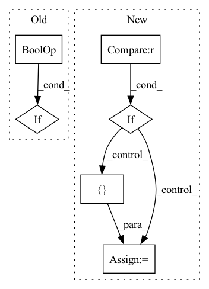

Pattern ID :23
Before Change
biases = [bias]
if (self.pair_bias and
z is not None and // For the
self.layer_norm_z is not None and // benefit of
self.linear_z is not None // TorchScript
):
// [*, N_res, N_res, C_z]
z = self.layer_norm_z(z)
// [*, N_res, N_res, no_heads]
z = self.linear_z(z)After Change
cost of slower execution. Chunking is not performed by default.
if(_chunk_logits is not None) :
return self._chunked_msa_attn(
m=m, z=z, mask=mask,
chunk_logits=_chunk_logits, checkpoint=_checkpoint_chunks
)
m, mask_bias, z = self._prep_inputs(m, z, mask)
biases = [ mask_biasIn pattern: SUPERPATTERN
Frequency: 3
Non-data size: 6
Instances Fragment ID: 36481
Project Name: aqlaboratory/openfold
Commit Name: a8601529127ff19fc50fee55e8ac810ebe712c82
Time: 2022-02-03
Author: gahdritz@gmail.com
File Name: openfold/model/msa.py
M Class Name: MSAAttention
N Class Name: MSAAttention
M Method Name: forward(7)
N Method Name: forward(6)
M Parent Class: nn.Module
N Parent Class: nn.Module
M File Name: openfold/model/msa.py
N File Name: openfold/model/msa.py
M Start Line: 114
M End Line: 151
N Start Line: 185
N End Line: 214
Before Change
"If use_lma is specified, q_chunk_size and kv_chunk_size must "
"be provided"
)
if (use_memory_efficient_kernel and use_lma):
raise ValueError(
"Choose one of use_memory_efficient_kernel and use_lma"
)
After Change
"be provided"
)
if (use_flash and biases is not None ):
raise ValueError(
"use_flash is incompatible with the bias option. For masking, "
"use flash_mask instead"
)
attn_options = [ use_memory_efficient_kernel, use_lma, use_flash Fragment ID: 36485
Project Name: aqlaboratory/openfold
Commit Name: 4f53624d92b28c56c5479c20f262f63b4eaeec68
Time: 2022-07-08
Author: gahdritz@gmail.com
File Name: openfold/model/primitives.py
M Class Name: Attention
N Class Name: Attention
M Method Name: forward(10)
N Method Name: forward(8)
M Parent Class: nn.Module
N Parent Class: nn.Module
M File Name: openfold/model/primitives.py
N File Name: openfold/model/primitives.py
M Start Line: 439
M End Line: 469
N Start Line: 415
N End Line: 486
Before Change
k2 = self.relative_positions_encoding(k2, model_kwargs["position_ids"][:, 1, :])
query_layer = torch.concat([q1, q2], dim=(q1.ndim - 1))
key_layer = torch.concat([k1, k2], dim=(k1.ndim - 1))
elif self.p_bias == "rotary" and not self.position_encoding_2d: // 原rotary逻辑
query_layer = self.relative_positions_encoding(query_layer, model_kwargs["position_ids"])
key_layer = self.relative_positions_encoding(key_layer, model_kwargs["position_ids"])
if self.is_decoder:
After Change
else: // 原rotary逻辑
query_layer = self.relative_positions_encoding(query_layer, model_kwargs["position_ids"])
key_layer = self.relative_positions_encoding(key_layer, model_kwargs["position_ids"])
if past_key_value is not None : // 过了rope再concat
key_layer = torch.cat([past_key_value[0], key_layer], dim=2)
value_layer = torch.cat([ past_key_value[1], value_layer Fragment ID: 36477
Project Name: tongjilibo/bert4torch
Commit Name: 090c634fbb8811f4efd757a1f34268eabbfad570
Time: 2023-04-07
Author: tongjilibo@163.com
File Name: bert4torch/layers.py
M Class Name: MultiHeadAttentionLayer
N Class Name: MultiHeadAttentionLayer
M Method Name: forward(6)
N Method Name: forward(6)
M Parent Class: nn.Module
N Parent Class: nn.Module
M File Name: bert4torch/layers.py
N File Name: bert4torch/layers.py
M Start Line: 151
M End Line: 185
N Start Line: 151
N End Line: 192